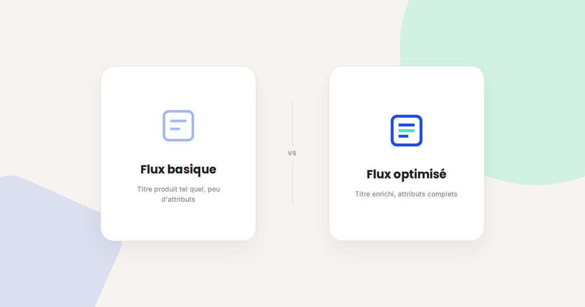
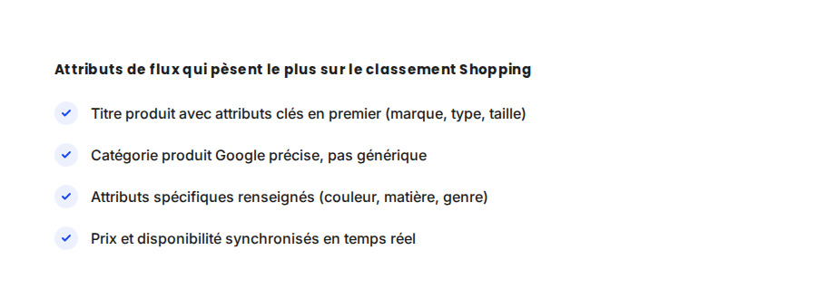

Google Shopping : structurer un flux produit qui convertit
Sur Google Shopping, l'enchère la plus intelligente ne compense jamais un flux produit mal structuré. C'est la donnée du flux — titre, catégorie, attributs — qui détermine sur quelles requêtes votre produit apparaît, bien avant que la stratégie d'enchères n'entre en jeu.

Dans les audits Google Shopping que je mène, le budget publicitaire n'est presque jamais le premier problème. Le flux produit — ce fichier qui décrit chaque article à Google — l'est. Un flux pauvre en attributs limite mécaniquement le nombre de requêtes sur lesquelles vos produits peuvent apparaître, quel que soit le budget engagé derrière.
Ce qui ne change pas
La structure de base d'un flux Google Shopping reste la même depuis des années : un fichier avec les champs obligatoires (identifiant, titre, description, prix, disponibilité, lien, image). Les règles de conformité de Google (pas de majuscules abusives, pas de texte promotionnel dans le titre) n'ont pas changé non plus — un flux non conforme continue de faire rejeter des produits, avec le même type d'erreurs qu'il y a cinq ans.
Ce qui change vraiment
- L'ordre des mots dans le titre compte plus que leur simple présence. Google accorde plus de poids aux premiers mots d'un titre : placer la marque, le type de produit et l'attribut différenciant (taille, couleur) dans les 5 premiers mots améliore la correspondance avec les requêtes.
- Les attributs spécifiques sont devenus quasi obligatoires pour être compétitif. Couleur, matière, genre, tranche d'âge : chaque attribut renseigné ouvre de nouvelles requêtes de filtre que les acheteurs utilisent de plus en plus (« robe bleue coton femme »).
- La fraîcheur des données pèse directement sur la diffusion. Un flux mis à jour une fois par semaine, avec des stocks ou des prix décalés, envoie un signal de fiabilité dégradé qui peut limiter la diffusion — au-delà du simple risque de rejet pour rupture de stock.
- Les avis produits et la note vendeur influencent de plus en plus le classement. À budget et pertinence équivalents, un produit avec des avis visibles et une bonne note vendeur est favorisé face à un produit sans aucun signal de confiance.

Un exemple qui illustre bien la différence
Sur un catalogue e-commerce que j'ai audité, les titres produits reprenaient simplement le nom interne du fournisseur — sans marque ni attribut visible. La réécriture systématique des 400 titres (marque + type + attribut clé, dans cet ordre) a fait passer le nombre d'impressions Shopping de +65 % en trois semaines, sans aucun changement de budget ni d'enchère. Le flux, pas la stratégie média, était le goulot d'étranglement.
Ce qu'il faut faire concrètement
- Auditez vos 20 produits les plus vendus en premier : vérifiez que le titre suit l'ordre marque / type / attribut clé, et que tous les attributs Google pertinents sont renseignés.
- Automatisez la synchronisation des stocks et prix plutôt qu'une mise à jour manuelle hebdomadaire — un flux via API ou plugin e-commerce à jour plusieurs fois par jour limite le risque de rejet et de mauvais signal.
- Utilisez le rapport de diagnostic du Merchant Center régulièrement, pas seulement au moment de la mise en ligne : les erreurs de conformité s'accumulent avec le catalogue qui évolue.
- Activez la collecte d'avis produits si ce n'est pas déjà fait — c'est un signal de plus en plus déterminant à budget équivalent.
FAQ
Faut-il un outil spécifique pour gérer un flux Google Shopping ?
Pour un petit catalogue, un flux généré manuellement ou via un plugin e-commerce standard suffit. Au-delà de quelques centaines de références, un outil de gestion de flux dédié devient utile pour automatiser l'optimisation des titres et attributs.
À quelle fréquence faut-il mettre à jour son flux produit ?
Les prix et la disponibilité devraient idéalement être synchronisés plusieurs fois par jour. Le contenu (titres, attributs, images) peut être revu moins souvent, mais mérite un audit trimestriel.
Les avis produits sont-ils obligatoires pour bien performer sur Shopping ?
Non, mais ils deviennent un facteur différenciant croissant. Un produit sans avis peut toujours bien performer si le reste du flux (titre, attributs, prix) est solide.
Envie d'un audit de votre flux Google Shopping ?
Pour aller plus loin, voir la page Google Shopping, la page SEA, et la page Données structurées.
Pour continuer sur ce sujet.